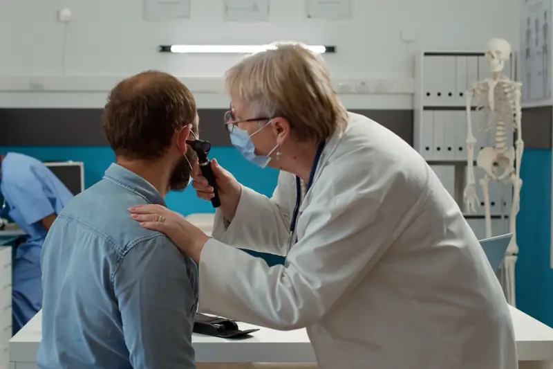
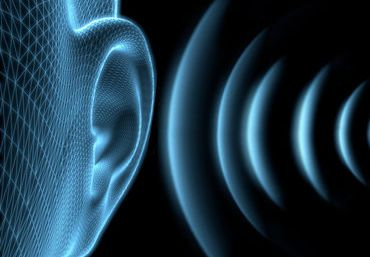

Introduction
Moraya Multispeciality Charitable Hospital is a trusted Ear Surgery Hospital in Pune,
offering advanced surgical treatment for a wide range of ear disorders affecting hearing,
balance, and ear health. Our experienced ENT specialists provide comprehensive diagnosis,
modern surgical care, and personalized treatment plans for both adults and children.
We serve patients across Pune, PCMC, Chinchwad, Pimpri, Nigdi, Ravet, and surrounding areas
with expert ear care, hearing restoration procedures, and advanced ENT surgical services.

Advanced Ear Surgery Services
Our ENT department specializes in diagnosing and treating complex ear conditions that may require surgical intervention to improve hearing, eliminate infections, and restore ear function.
01
Ear Infection Surgery
Chronic or recurrent ear infections can damage the ear and affect hearing if left untreated.
Conditions Treated:
- Chronic ear infections
- Recurrent ear discharge
- Middle ear infections
- Ear drum perforation
- Persistent ear pain
02
Eardrum Repair Surgery (Tympanoplasty)
A perforated eardrum can lead to hearing loss, infections, and discomfort.
Benefits of Tympanoplasty:
- Repair of damaged eardrum
- Improved hearing ability
- Reduced risk of infections
- Enhanced ear health
03
Mastoid Surgery (Mastoidectomy)
Mastoid surgery may be recommended when infections spread to the mastoid bone behind the ear.
Conditions Treated:
- Chronic ear disease
- Mastoid infections
- Cholesteatoma
- Recurrent ear infections
04
Services Include:
Certain ear conditions can lead to conductive hearing loss that may improve with surgical treatment.
Services Include:
- Hearing evaluation
- Surgical consultation
- Hearing improvement procedures
- Post-operative hearing assessment
05
Ear Tube Surgery (Grommet Insertion)
Ear tube placement may help children and adults suffering from recurrent ear infections or fluid accumulation in the middle ear.
Benefits Include:
- Improved hearing
- Reduced infections
- Better ear ventilation
- Enhanced speech development in children
06
Cholesteatoma Treatment
Cholesteatoma is an abnormal skin growth in the middle ear that can damage hearing and surrounding structures if untreated.
Symptoms Include:
- Ear discharge
- Hearing loss
- Ear fullness
- Dizziness
Conditions That May Require Ear Surgery
Consult an ENT specialist if you experience:
- Chronic ear infections
- Persistent ear discharge
- Hearing loss
- Perforated eardrum
- Ear pain
- Recurrent middle ear infections
- Cholesteatoma
- Balance problems
- Ear-related dizziness
Early diagnosis and treatment can help prevent long-term hearing complications.

Diagnostic Services for Ear Disorders
Our ENT specialists provide comprehensive evaluations to determine the most appropriate
treatment plan.
Services Include:
- Ear examination
- Audiometry testing
- Hearing assessment
- ENT consultation
- Balance disorder evaluation
Why Choose Moraya Hospital for Ear Surgery in Pune?
- Experienced ENT surgeons
- Advanced ear surgery facilities
- Comprehensive hearing assessments
- Modern diagnostic support
- Personalized treatment plans
- Affordable ear surgery in Pune and PCMC
- Multispeciality hospital infrastructure
- Patient-focused ENT care
Benefits of Timely Ear Surgery
- Improved hearing ability
- Reduced risk of recurrent infections
- Better quality of life
- Restoration of ear function
- Prevention of long-term complications
- Improved communication and confidence
Frequently Asked Questions
Quick information to help patients understand our services and facilities.